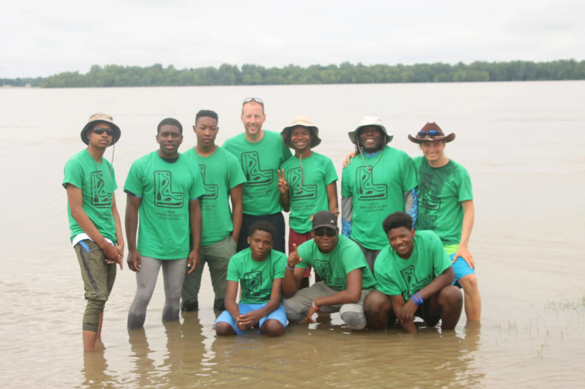
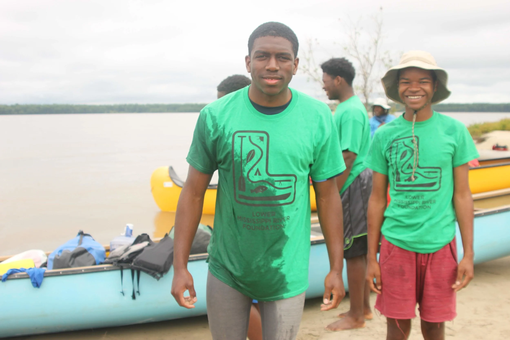
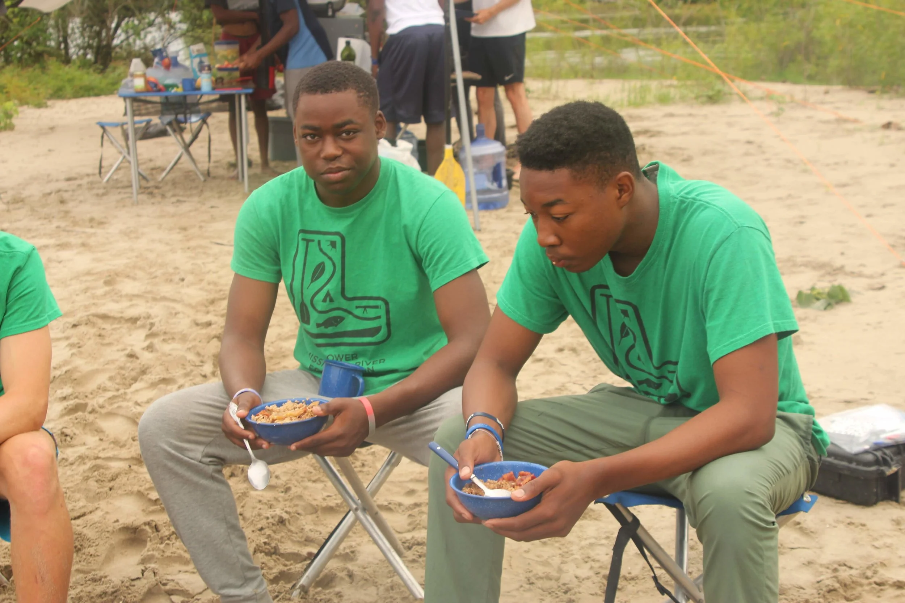

"Do not follow where the path may lead. Go instead where there is no path and leave a trail" - Ralph Waldo Emerson
Each year we ask the group to develop a team name that symbolizes who they are as a unit. This year they choose to be called The Disciples.

John often tells the story of how he began doing tours on the river. When he first started canoeing on the Mississippi he found it was a beautiful and magical place, but that it was lonely with no one to see it. So he started bring people out to experience it.
The attitude about the river is that it is a place to be feared. Each year we struggle recruiting kids for this trip. Kids are cautious but parents are afraid. This year's crew are the disciples because they have to spread the message about what the river truly is.

Our last day together we celebrated everything we had learned and we welcomed a new group of students to our river family.

They came to experience the river and now it is up to them to share it with the rest of the world.
We won't change the world overnight, but each heart and mind that we convince brings us one step closer.

Thank you again to all the people who helped make this camp possible. To our funders who made this trip affordable for students from the Delta. To our supporters who helped recruit students. To the parents and guardians who encouraged their children to do something extraordinary this summer. And mostly to The Disciples themselves for being courageous, honest and selfless all week long.